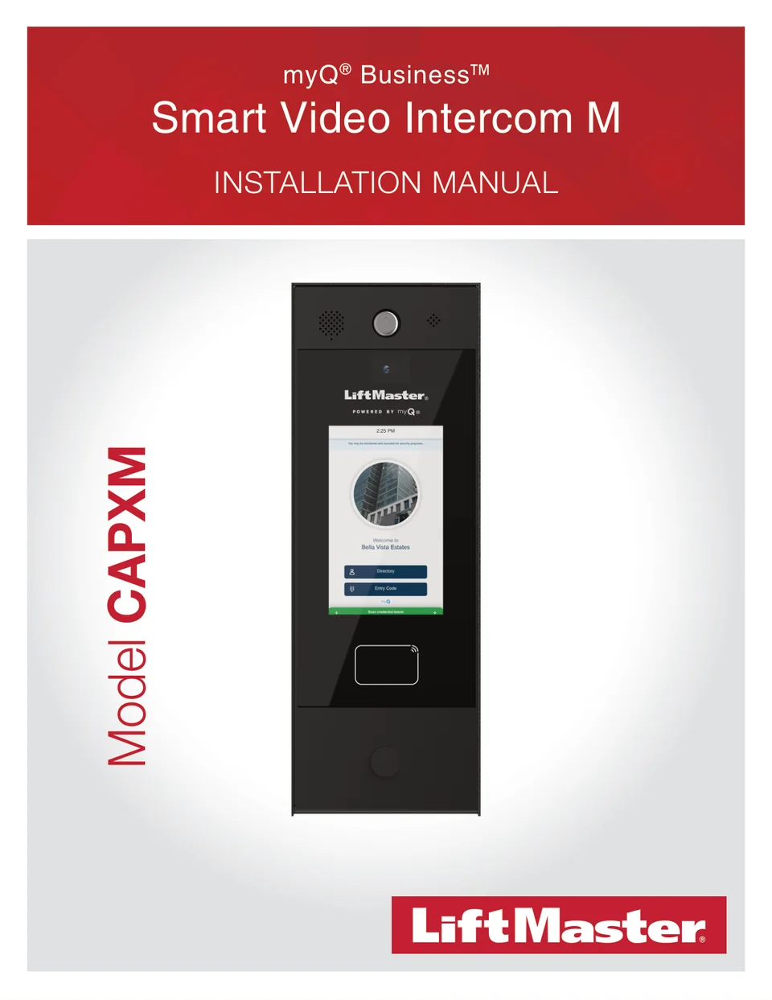

Experience & selected samples Technical publications
Chamberlain Group product documentation
At Chamberlain Group, I wrote and revised manuals, product guides, and technical labels for global audiences.
Documentation at Chamberlain Group
I wrote instructions for installing and using products and revised existing documentation as products changed. The work included manuals, product guides, and technical labels, where the layout and illustrations had to work alongside the instructions.
Localization and revisions
I maintained translation databases and earlier editions of the documentation. I also led changes to the process for preparing product documentation for release in multiple languages.
CAPXM installation manual

Related samples
- CAPXL / CAPXLV quick-start guide (PDF, 9.14 MB)
- Wiring diagram — PNG image.
- Technical illustration — PNG image.


These are historical portfolio samples, not a substitute for current manufacturer instructions. No independent safety certification or measured product-performance outcome is asserted here.